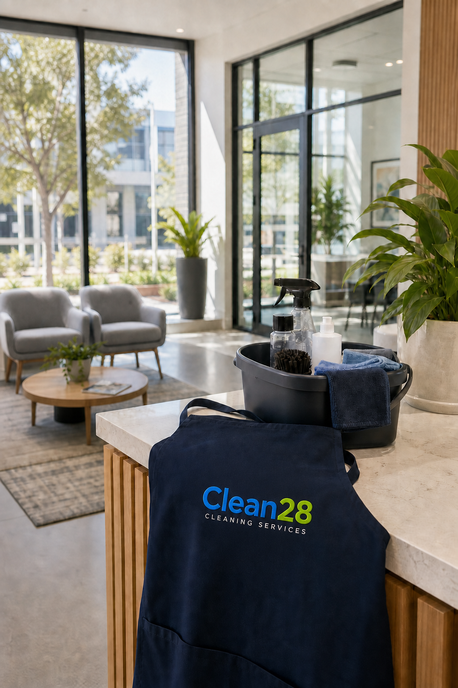
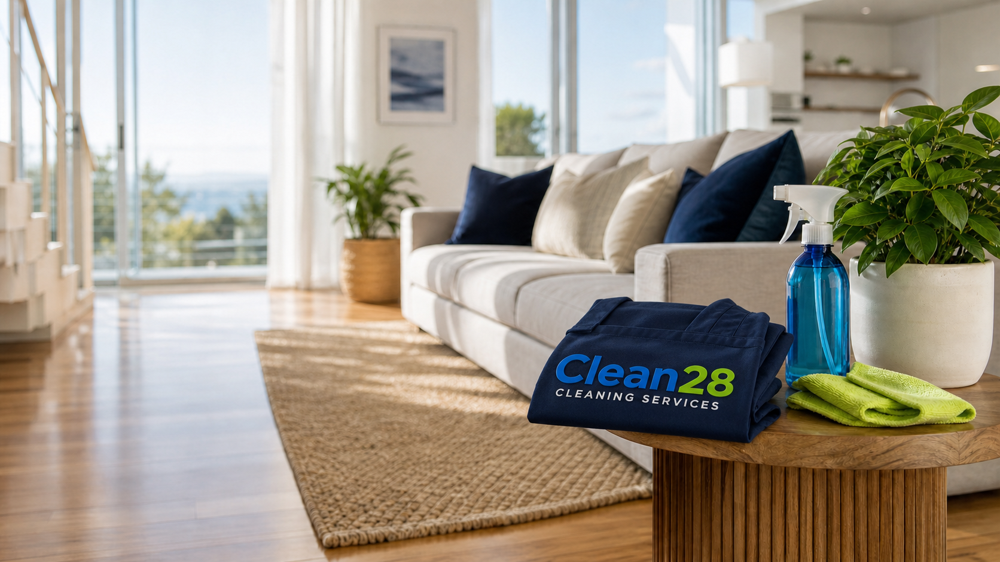

The team has made our weekly reset feel like a tiny luxury. They notice every detail — even the ones I never get around to.
Client stories
Trusted in the places that matter most.
The best measure of a clean is how it makes people feel. Here is what Clean28 clients have shared about their experience.

★★★★★
“Reliable, warm and incredibly thorough. Our office has never felt better.”
Daniel T. · Workplace clean★★★★★
“Our shared space feels so much brighter and more welcoming. The team were thoughtful from start to finish.”
Priya M. · Community-space clean
Clean28Cleaning Services
Fresh spaces make room for slower mornings and easier days.
More kind words
Fresh spaces, happier days.
★★★★★
“The communication was so easy and the result was exactly what we hoped for. Our kitchen looks brand new.”
Michelle G. · Deep clean★★★★★
“Friendly, careful and punctual. It is the first time outsourcing cleaning has felt completely effortless.”
Jordan L. · Regular home clean★★★★★
“A thoughtful service from quote to finish. The team went above and beyond for our community centre.”
Karla S. · Community-space cleanA few helpful answers
Questions before you book?
We want every part of your Clean28 experience to feel simple. If you cannot find what you need below, get in touch.
Ask us a question →Do I need to provide cleaning products?
No need. Our team brings everyday essentials. If you have a favourite product or a particular sensitivity, let us know when you book.
Can I request the same cleaner each time?
Yes. Consistency matters, so we will do our best to keep your regular cleaner wherever possible.
Are your team members insured and checked?
Yes. Every cleaner is vetted, trained and covered by insurance, so you can feel comfortable from the first visit.
What areas do you service?
We are a local Perth team serving Perth homes, offices and community spaces. Send us your suburb and we will confirm availability.
What a good service feels like
Thoughtful from the first message to the final detail.
The most helpful cleaning service is one you do not have to overthink. We make space for clear questions, tailored priorities and a calm, dependable routine.
Ask for a tailored quoteEasy to arrange
Tell us the essentials and we will help shape a service that makes sense for your space.
Comfortable to welcome
We treat homes, workplaces and shared spaces with the same care we would expect ourselves.
Simple to continue
When you need regular support, we keep the plan practical and communication clear.